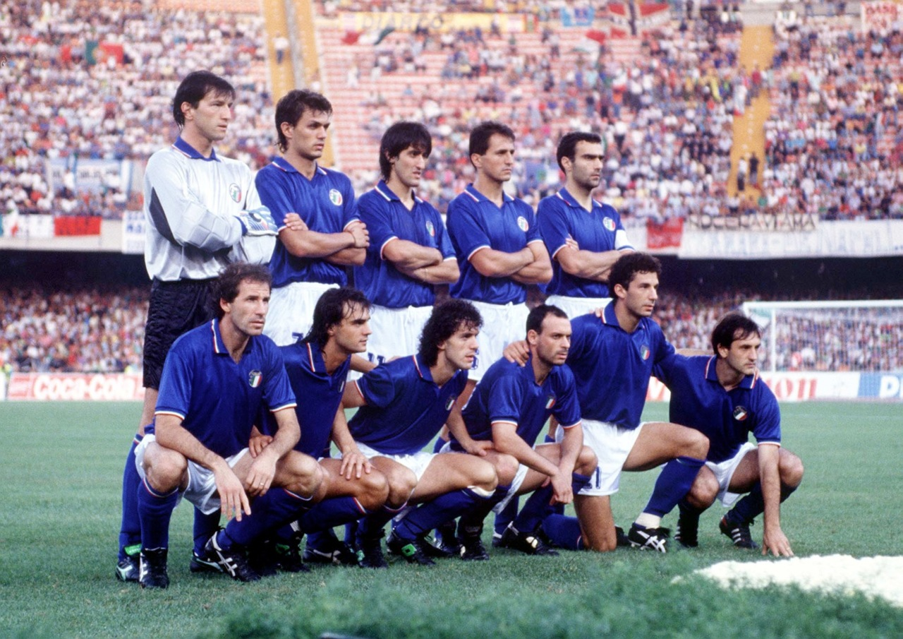
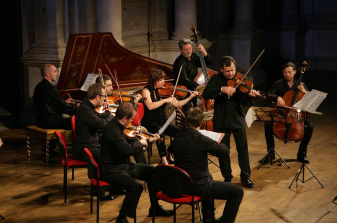

Culture
Food
Although Italians are known throughout the world for pizza, pasta, and gelato, the national diet of Italy has traditionally differed greatly by region. Prior to the blending of cooking practices among different regions, it was possible to distinguish Italian cooking simply by the type of cooking fat used: butter was used in the north, pork fat in the center of the country, and olive oil in the south. Staple dishes in the north were rice and polenta, and pasta was most popular throughout the south. During the last decades of the twentieth century (1980s and 1990s), however, pasta and pizza (another traditional southern food) became popular in the north of Italy. Pasta is more likely to be served with a white cheese sauce in the north and a tomato-based sauce in the south. A key factor in the success of Italian cuisine is its heavy reliance on traditional products; Italy has the most traditional specialities protected under EU law. Cheese, cold cuts and wine are a major part of Italian cuisine,and along with coffee (especially espresso) make up a very important part of the Italian gastronomic culture. Desserts have a long tradition of merging local flavours such as citrus fruits, pistachio and almonds with sweet cheeses like mascarpone and ricotta or exotic tastes as cocoa, vanilla and cinnamon. Gelato, tiramisù and cassata are among the most famous examples of Italian desserts, cakes and patisserie.
Sports
In Italy, calcio (soccer to Americans, football to Europeans) surpasses all other sports. La Squadra Azzurra (the blue team) is a major source of national pride and sometimes agony. Some claim that Italy's victory in the 1982 World Cup did more for national unity than any political movement. Italy also has a strong foothold in a number of other sports such as rugby, athletics, tennis, fencing, as well as winter sports. Italian riders are well-known in the cycling circuit for winning more World Cycling Championships than any country, with exception to Belgium. The Giro d'Italia is one of the three Grand Tours that is held every May. It normally runs or three weeks, much like the Vuelta a Espana and the Tour de France. Italy has participated in most of the modern Olympic Games since 1896, missing only the 1904 Games. They are one of the most successful nation to ever join either the Summer or Winter Games and have hosted the Games in three separate occasions.
Art
Italy has been, since antiquity, the centre of history, culture and art. Our museums, collections and archaeological sites reveal countless tokens of the past and the many civilizations that have passed across this country, evidence of which is still inextricably woven into the present day landscape. Artistic wonders can be found everywhere, and every corner of the country holds countless and wonderful surprises. Our artistic and cultural heritage is one of the most valuable in the world. Italy has more cultural UNESCO World Heritage Sites than any other country. Rome, Florence, Assisi, Venice, Siena, Pisa, and Naples are its most renowned cities of art, but the whole country can boast towns of breathtaking beauty. Tourists can explore and discover the private residences of ancient and noble families; visit world famous museums such as the Uffizi Gallery in Florence, the Capitoline Museums in Rome, or the Brera Art Gallery in Milan; explore impressive archaeological sites, such as Pompei and Herculaneum, to immerse themselves in an exciting, grandiose past. That is by no means all - there are numerous cultural, artistic, and musical events that animate Italian life. Italy offers a rich combination of masterpieces from different areas, blending landscape and culture, history and art, architecture and city planning - it offers an exciting journey through time, from the Ancient Greeks and Romans to the present day, which is also filled by a wealth of art and culture.
Music
Italian music takes different forms ranging from opera, to folk music over popular music and religious music. Music and dance have always formed an important part of Italian and European culture and folklore. Many music instruments, such as the violin and piano, were invented in Italy. The musical scale, the art of the Opera and many music terms, such as sonnet, concert, quartet, were also born in Italy and many of the existing European classical music forms can trace their roots back of the innovations of sixteenth and seventeenth century Italian music (such as symphony, concerto, and sonata). These innovations in terms of harmony and notation have strongly influenced European classical music and enabled the development of opera in the late 500s. Italian popular music finds its source both in native and imported music styles. Neapolitan song, canzone Napoletana, and the Italian cantautori (singer-songwriter), alongside imported genres like jazz, pop, rock and hip hop have contributed to a very electric body of Italian music. However, Italian folk music also forms an important part of the country’s musical heritage, offering a diverse array of regional styles, instruments and locally colored languages.
